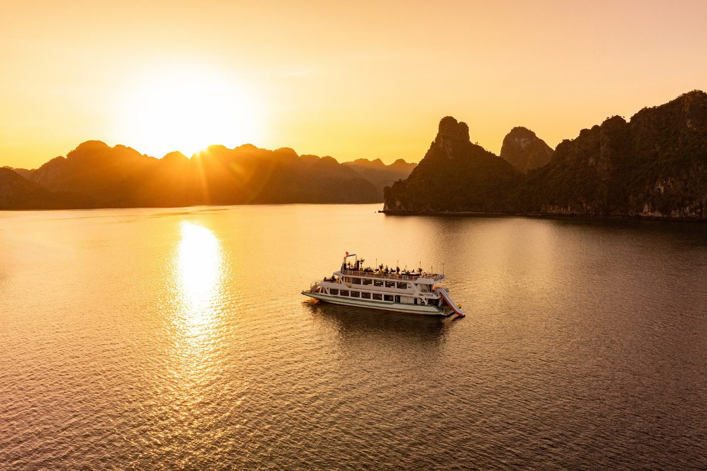

5-star day cruise · Cat Ba National Park · Trung Trang Cave · Kayaking
A full day on a 5-star cruise through Lan Ha Bay and Cat Ba Island: an electric-car ride through the forest, Trung Trang Cave, the national park museum, kayaking and swimming in Tra Bau, and a sunset party on board.
Pick-up from designated meeting points in Hanoi's Old Quarter and the Opera House area. Your guide will call the evening before to confirm your pick-up point and time. As this is a shared group tour, the vehicle waits a maximum of 5 minutes at each point.
Short 30-minute rest stop on the expressway.
Arrive at Tuan Chau Harbour and board the cruise with a welcome drink.
Five-star buffet lunch on board with fresh seafood, as the cruise sails towards Lan Ha Bay and Cat Ba Island. An Indian vegetarian or non-vegetarian set menu is available on request.
Arrive at Cat Ba Island and take an electric car along one of Vietnam's most scenic forest roads.
Trung Trang Cave, Cat Ba's most impressive cave, with stalactites and stalagmites millions of years old.
Cat Ba National Park, a UNESCO World Biosphere Reserve: photo stops and the Natural History Museum, home to rare species found on the island.
Electric car back to the cruise.
Cruise into the Tra Bau area, the heart of Lan Ha Bay, surrounded by limestone peaks rising from emerald water.
Activities in Tra Bau: kayak past cliffs and hidden caves, swim in clear water, try the water slide and the giant inflatable playground.
Relax in the jacuzzi on the sundeck and enjoy a sunset party with juice, tea, fresh fruit, cakes and music as the cruise returns to the harbour.
Arrive at Tuan Chau Harbour and transfer back to Hanoi.
Drop-off at your hotel in the Old Quarter. Tour ends.